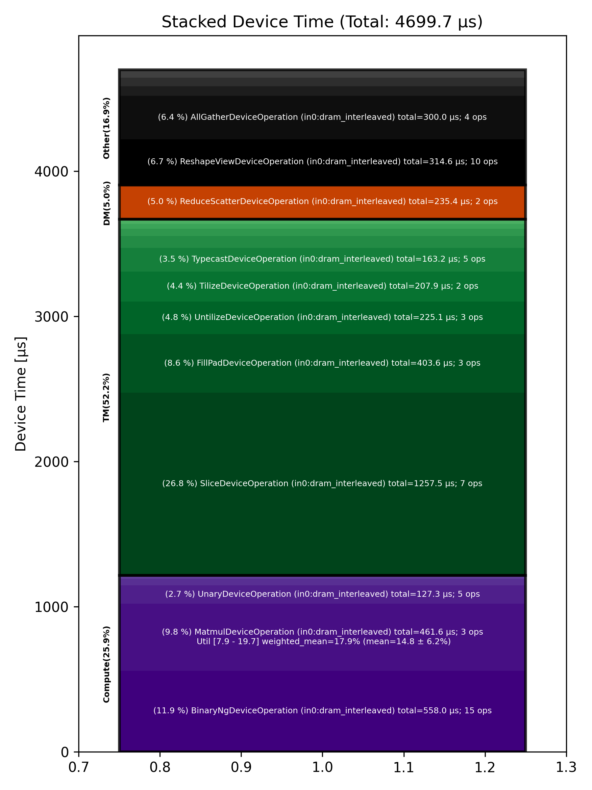

🚀 Performance Report 🚀 ======================== ID Total % Bound OP Code Device Device Time Op-to-Op Gap Cores DRAM DRAM % FLOPs FLOPs % Math Fidelity ------------------------------------------------------------------------------------------------------------------------------------------------------------------------- 32 0.3 % TypecastDeviceOperation 9 56 μs 72 BF16 => FP32 52 1.5 % UnaryDeviceOperation 22 69 μs 224 μs 72 FP32 => FP32 87 0.5 % FillPadDeviceOperation 14 79 μs 11 μs 64 FP32 => FP32 104 0.7 % ReduceDeviceOperation 1 36 μs 109 μs 64 FP32 => FP32 131 0.3 % ReshapeViewDeviceOperation 25 24 μs 46 μs 2 FP32 => FP32 177 2.0 % AllGatherDeviceOperation 0 16 μs 376 μs 8 FP32 => FP32 194 0.4 % FillPadDeviceOperation 24 9 μs 77 μs 4 FP32 => FP32 229 1.8 % TransposeDeviceOperation 27 6 μs 363 μs 72 FP32 => FP32 281 0.4 % ReduceDeviceOperation 12 4 μs 85 μs 64 FP32 => FP32 310 0.9 % TransposeDeviceOperation 15 3 μs 168 μs 72 FP32 => FP32 335 0.5 % ReshapeViewDeviceOperation 6 9 μs 101 μs 64 FP32 => FP32 363 1.0 % BinaryNgDeviceOperation 29 16 μs 175 μs 72 FP32, FP32 => FP32 389 1.3 % BinaryNgDeviceOperation 27 15 μs 252 μs 72 FP32, FP32 => FP32 429 1.2 % UnaryDeviceOperation 31 6 μs 235 μs 64 FP32 => FP32 473 1.7 % BinaryNgDeviceOperation 12 78 μs 266 μs 72 FP32, FP32 => FP32 482 1.4 % BinaryNgDeviceOperation 24 89 μs 183 μs 72 FP32, FP32 => FP32 525 1.1 % TypecastDeviceOperation 31 46 μs 168 μs 72 FP32 => BF16 574 1.2 % ReshapeViewDeviceOperation 11 26 μs 205 μs 46 BF16 => BF16 607 0.5 % UntilizeWithUnpaddingDeviceOperation 10 26 μs 67 μs 2 BF16 => BF16 631 0.7 % RepeatDeviceOperation 14 9 μs 139 μs 72 BF16 => BF16 655 0.5 % TilizeWithValPaddingDeviceOperation 6 22 μs 83 μs 8 BF16 => BF16 675 3.3 % SLOW MatmulDeviceOperation 64 x 736 x 5760 9 209 μs 457 μs 60 97 GB/s 33.6 % 10.4 TFLOPs 16.8 % HiFi4 BF16 x BFP8 => BF16 721 2.5 % ReduceScatterDeviceOperation 0 96 μs 404 μs 24 BF16 => BF16 753 2.2 % AllGatherDeviceOperation 0 92 μs 347 μs 40 BF16 => BF16 780 0.5 % BinaryNgDeviceOperation 30 49 μs 59 μs 72 BF16, BF16 => BF16 804 1.4 % UntilizeDeviceOperation 26 111 μs 164 μs 60 BF16 => BF16 865 3.8 % SliceDeviceOperation 8 608 μs 153 μs 72 BF16 => BF16 866 0.5 % TilizeDeviceOperation 24 104 μs 1 μs 45 BF16 => BF16 922 0.1 % UnaryDeviceOperation 16 17 μs 1 μs 72 BF16 => BF16 939 0.1 % BinaryNgDeviceOperation 29 24 μs 1 μs 72 BF16, BF16 => BF16 964 0.9 % UntilizeDeviceOperation 26 111 μs 72 μs 60 BF16 => BF16 1025 3.8 % SliceDeviceOperation 8 607 μs 145 μs 72 BF16 => BF16 1037 0.5 % TilizeDeviceOperation 31 104 μs 1 μs 45 BF16 => BF16 1087 0.1 % UnaryDeviceOperation 10 17 μs 1 μs 72 BF16 => BF16 1096 0.1 % BinaryNgDeviceOperation 1 23 μs 1 μs 72 BF16, BF16 => BF16 1135 0.1 % UnaryDeviceOperation 6 19 μs 1 μs 72 BF16 => BF16 1156 0.7 % BinaryNgDeviceOperation 26 23 μs 117 μs 72 BF16, BF16 => BF16 1193 1.3 % BinaryNgDeviceOperation 0 23 μs 237 μs 72 BF16, BF16 => BF16 1226 3.3 % SLOW MatmulDeviceOperation 64 x 2880 x 736 13 234 μs 418 μs 23 44 GB/s 15.4 % 4.6 TFLOPs 19.7 % HiFi4 BF16 x BFP8 => BF16 1258 0.0 % BinaryNgDeviceOperation 28 8 μs 1 μs 72 BF16, BF16 => BF16 1288 1.3 % ReshapeViewDeviceOperation 1 162 μs 89 μs 72 BF16 => BF16 1331 1.0 % TypecastDeviceOperation 21 57 μs 134 μs 72 BF16 => FP32 1356 1.1 % ReshapeViewDeviceOperation 30 38 μs 186 μs 46 FP32 => FP32 1406 1.4 % SLOW MatmulDeviceOperation 64 x 736 x 32 17 19 μs 264 μs 2 12 GB/s 4.1 % 0.2 TFLOPs 7.9 % HiFi4 FP32 x BFP8 => FP32 1425 1.5 % AllGatherDeviceOperation 0 18 μs 277 μs 8 FP32 => FP32 1465 0.7 % TransposeDeviceOperation 12 6 μs 131 μs 72 FP32 => FP32 1488 0.8 % ReduceDeviceOperation 5 5 μs 161 μs 64 FP32 => FP32 1521 0.5 % TransposeDeviceOperation 4 3 μs 97 μs 72 FP32 => FP32 1553 1.0 % BinaryNgDeviceOperation 4 17 μs 176 μs 72 FP32, FP32 => FP32 1580 1.1 % TypecastDeviceOperation 30 2 μs 218 μs 2 FP32 => BF16 1625 0.7 % PadDeviceOperation 12 35 μs 97 μs 4 BF16 => BF16 1641 0.9 % TopKDeviceOperation 0 44 μs 131 μs 2 BF16 => BF16 1676 1.1 % SliceDeviceOperation 30 1 μs 214 μs 2 BF16 => BF16 1707 0.5 % SliceDeviceOperation 29 1 μs 94 μs 2 UINT16 => UINT16 1730 0.9 % TypecastDeviceOperation 24 2 μs 170 μs 2 UINT16 => INT32 1765 0.5 % ReshapeViewDeviceOperation 27 7 μs 88 μs 8 INT32 => INT32 1802 1.0 % UntilizeWithUnpaddingDeviceOperation 28 14 μs 183 μs 8 INT32 => INT32 1832 1.2 % UntilizeWithUnpaddingDeviceOperation 1 14 μs 234 μs 8 INT32 => INT32 1881 0.4 % PermuteDeviceOperation 12 4 μs 68 μs 8 INT32 => INT32 1904 0.9 % PermuteDeviceOperation 5 4 μs 182 μs 8 INT32 => INT32 1940 0.4 % ConcatDeviceOperation 22 1 μs 79 μs 2 INT32, INT32 => INT32 1969 1.0 % PermuteDeviceOperation 4 4 μs 197 μs 8 INT32 => INT32 2007 0.5 % TilizeWithValPaddingDeviceOperation 14 8 μs 93 μs 8 INT32 => INT32 2046 1.7 % SoftmaxDeviceOperation 11 24 μs 311 μs 72 BF16 => BF16 2068 1.1 % SliceDeviceOperation 22 2 μs 211 μs 8 INT32 => INT32 2088 0.6 % UntilizeWithUnpaddingDeviceOperation 1 14 μs 102 μs 8 INT32 => INT32 2119 0.8 % SliceDeviceOperation 2 4 μs 159 μs 72 INT32 => INT32 2151 1.2 % TilizeWithValPaddingDeviceOperation 2 8 μs 225 μs 8 INT32 => INT32 2183 0.6 % BinaryNgDeviceOperation 2 11 μs 110 μs 72 INT32, INT32 => INT32 2234 0.8 % BinaryNgDeviceOperation 16 3 μs 165 μs 72 INT32, INT32 => INT32 2259 1.2 % ReshapeViewDeviceOperation 21 7 μs 241 μs 8 INT32 => INT32 2274 1.2 % ReshapeViewDeviceOperation 24 3 μs 237 μs 8 BF16 => BF16 2337 0.5 % UntilizeWithUnpaddingDeviceOperation 8 7 μs 95 μs 1 INT32 => INT32 2367 0.9 % UntilizeWithUnpaddingDeviceOperation 10 6 μs 165 μs 1 BF16 => BF16 2400 0.8 % ScatterDeviceOperation 9 60 μs 93 μs 1 BF16, INT32 => BF16 2412 0.7 % TilizeWithValPaddingDeviceOperation 30 5 μs 140 μs 64 BF16 => BF16 2439 1.4 % ReshapeViewDeviceOperation 2 23 μs 247 μs 2 BF16 => BF16 2497 0.4 % UntilizeDeviceOperation 8 4 μs 77 μs 2 BF16 => BF16 2519 5.9 % MeshPartitionDeviceOperation 31 2 μs 1,175 μs 64 BF16 => BF16 2536 0.7 % TilizeWithValPaddingDeviceOperation 1 5 μs 131 μs 2 BF16 => BF16 2564 1.4 % TransposeDeviceOperation 26 2 μs 271 μs 72 BF16 => BF16 2600 1.5 % ReshapeViewDeviceOperation 1 16 μs 275 μs 72 BF16 => BF16 2641 2.0 % BinaryNgDeviceOperation 4 129 μs 267 μs 72 BF16, BF16 => BF16 2679 2.3 % FillPadDeviceOperation 14 315 μs 147 μs 72 BF16 => BF16 2713 0.3 % FastReduceNCDeviceOperation 12 66 μs 1 μs 72 BF16 => BF16 2732 0.2 % SliceDeviceOperation 30 34 μs 1 μs 72 BF16 => BF16 2769 4.0 % ReduceScatterDeviceOperation 0 139 μs 666 μs 24 BF16 => BF16 2801 2.3 % AllGatherDeviceOperation 0 174 μs 286 μs 40 BF16 => BF16 2831 0.2 % BinaryNgDeviceOperation 6 49 μs 1 μs 72 BF16, BF16 => BF16 ------------------------------------------------------------------------------------------------------------------------------------------------------------------------- 100.0 % 89 device ops, 0 host ops, 0 signposts 4,700 μs 15,274 μs 💡 Advice 💡 ============ High Op-to-Op Gap ---------------- 52 1.5 % UnaryDeviceOperation 22 69 μs 224 μs 72 FP32 => FP32 87 0.5 % FillPadDeviceOperation 14 79 μs 11 μs 64 FP32 => FP32 104 0.7 % ReduceDeviceOperation 1 36 μs 109 μs 64 FP32 => FP32 131 0.3 % ReshapeViewDeviceOperation 25 24 μs 46 μs 2 FP32 => FP32 177 2.0 % AllGatherDeviceOperation 0 16 μs 376 μs 8 FP32 => FP32 194 0.4 % FillPadDeviceOperation 24 9 μs 77 μs 4 FP32 => FP32 229 1.8 % TransposeDeviceOperation 27 6 μs 363 μs 72 FP32 => FP32 281 0.4 % ReduceDeviceOperation 12 4 μs 85 μs 64 FP32 => FP32 310 0.9 % TransposeDeviceOperation 15 3 μs 168 μs 72 FP32 => FP32 335 0.5 % ReshapeViewDeviceOperation 6 9 μs 101 μs 64 FP32 => FP32 363 1.0 % BinaryNgDeviceOperation 29 16 μs 175 μs 72 FP32, FP32 => FP32 389 1.3 % BinaryNgDeviceOperation 27 15 μs 252 μs 72 FP32, FP32 => FP32 429 1.2 % UnaryDeviceOperation 31 6 μs 235 μs 64 FP32 => FP32 473 1.7 % BinaryNgDeviceOperation 12 78 μs 266 μs 72 FP32, FP32 => FP32 482 1.4 % BinaryNgDeviceOperation 24 89 μs 183 μs 72 FP32, FP32 => FP32 525 1.1 % TypecastDeviceOperation 31 46 μs 168 μs 72 FP32 => BF16 574 1.2 % ReshapeViewDeviceOperation 11 26 μs 205 μs 46 BF16 => BF16 607 0.5 % UntilizeWithUnpaddingDeviceOperation 10 26 μs 67 μs 2 BF16 => BF16 631 0.7 % RepeatDeviceOperation 14 9 μs 139 μs 72 BF16 => BF16 655 0.5 % TilizeWithValPaddingDeviceOperation 6 22 μs 83 μs 8 BF16 => BF16 675 3.3 % SLOW MatmulDeviceOperation 64 x 736 x 5760 9 209 μs 457 μs 60 97 GB/s 33.6 % 10.4 TFLOPs 16.8 % HiFi4 BF16 x BFP8 => BF16 721 2.5 % ReduceScatterDeviceOperation 0 96 μs 404 μs 24 BF16 => BF16 753 2.2 % AllGatherDeviceOperation 0 92 μs 347 μs 40 BF16 => BF16 780 0.5 % BinaryNgDeviceOperation 30 49 μs 59 μs 72 BF16, BF16 => BF16 804 1.4 % UntilizeDeviceOperation 26 111 μs 164 μs 60 BF16 => BF16 865 3.8 % SliceDeviceOperation 8 608 μs 153 μs 72 BF16 => BF16 964 0.9 % UntilizeDeviceOperation 26 111 μs 72 μs 60 BF16 => BF16 1025 3.8 % SliceDeviceOperation 8 607 μs 145 μs 72 BF16 => BF16 1156 0.7 % BinaryNgDeviceOperation 26 23 μs 117 μs 72 BF16, BF16 => BF16 1193 1.3 % BinaryNgDeviceOperation 0 23 μs 237 μs 72 BF16, BF16 => BF16 1226 3.3 % SLOW MatmulDeviceOperation 64 x 2880 x 736 13 234 μs 418 μs 23 44 GB/s 15.4 % 4.6 TFLOPs 19.7 % HiFi4 BF16 x BFP8 => BF16 1288 1.3 % ReshapeViewDeviceOperation 1 162 μs 89 μs 72 BF16 => BF16 1331 1.0 % TypecastDeviceOperation 21 57 μs 134 μs 72 BF16 => FP32 1356 1.1 % ReshapeViewDeviceOperation 30 38 μs 186 μs 46 FP32 => FP32 1406 1.4 % SLOW MatmulDeviceOperation 64 x 736 x 32 17 19 μs 264 μs 2 12 GB/s 4.1 % 0.2 TFLOPs 7.9 % HiFi4 FP32 x BFP8 => FP32 1425 1.5 % AllGatherDeviceOperation 0 18 μs 277 μs 8 FP32 => FP32 1465 0.7 % TransposeDeviceOperation 12 6 μs 131 μs 72 FP32 => FP32 1488 0.8 % ReduceDeviceOperation 5 5 μs 161 μs 64 FP32 => FP32 1521 0.5 % TransposeDeviceOperation 4 3 μs 97 μs 72 FP32 => FP32 1553 1.0 % BinaryNgDeviceOperation 4 17 μs 176 μs 72 FP32, FP32 => FP32 1580 1.1 % TypecastDeviceOperation 30 2 μs 218 μs 2 FP32 => BF16 1625 0.7 % PadDeviceOperation 12 35 μs 97 μs 4 BF16 => BF16 1641 0.9 % TopKDeviceOperation 0 44 μs 131 μs 2 BF16 => BF16 1676 1.1 % SliceDeviceOperation 30 1 μs 214 μs 2 BF16 => BF16 1707 0.5 % SliceDeviceOperation 29 1 μs 94 μs 2 UINT16 => UINT16 1730 0.9 % TypecastDeviceOperation 24 2 μs 170 μs 2 UINT16 => INT32 1765 0.5 % ReshapeViewDeviceOperation 27 7 μs 88 μs 8 INT32 => INT32 1802 1.0 % UntilizeWithUnpaddingDeviceOperation 28 14 μs 183 μs 8 INT32 => INT32 1832 1.2 % UntilizeWithUnpaddingDeviceOperation 1 14 μs 234 μs 8 INT32 => INT32 1881 0.4 % PermuteDeviceOperation 12 4 μs 68 μs 8 INT32 => INT32 1904 0.9 % PermuteDeviceOperation 5 4 μs 182 μs 8 INT32 => INT32 1940 0.4 % ConcatDeviceOperation 22 1 μs 79 μs 2 INT32, INT32 => INT32 1969 1.0 % PermuteDeviceOperation 4 4 μs 197 μs 8 INT32 => INT32 2007 0.5 % TilizeWithValPaddingDeviceOperation 14 8 μs 93 μs 8 INT32 => INT32 2046 1.7 % SoftmaxDeviceOperation 11 24 μs 311 μs 72 BF16 => BF16 2068 1.1 % SliceDeviceOperation 22 2 μs 211 μs 8 INT32 => INT32 2088 0.6 % UntilizeWithUnpaddingDeviceOperation 1 14 μs 102 μs 8 INT32 => INT32 2119 0.8 % SliceDeviceOperation 2 4 μs 159 μs 72 INT32 => INT32 2151 1.2 % TilizeWithValPaddingDeviceOperation 2 8 μs 225 μs 8 INT32 => INT32 2183 0.6 % BinaryNgDeviceOperation 2 11 μs 110 μs 72 INT32, INT32 => INT32 2234 0.8 % BinaryNgDeviceOperation 16 3 μs 165 μs 72 INT32, INT32 => INT32 2259 1.2 % ReshapeViewDeviceOperation 21 7 μs 241 μs 8 INT32 => INT32 2274 1.2 % ReshapeViewDeviceOperation 24 3 μs 237 μs 8 BF16 => BF16 2337 0.5 % UntilizeWithUnpaddingDeviceOperation 8 7 μs 95 μs 1 INT32 => INT32 2367 0.9 % UntilizeWithUnpaddingDeviceOperation 10 6 μs 165 μs 1 BF16 => BF16 2400 0.8 % ScatterDeviceOperation 9 60 μs 93 μs 1 BF16, INT32 => BF16 2412 0.7 % TilizeWithValPaddingDeviceOperation 30 5 μs 140 μs 64 BF16 => BF16 2439 1.4 % ReshapeViewDeviceOperation 2 23 μs 247 μs 2 BF16 => BF16 2497 0.4 % UntilizeDeviceOperation 8 4 μs 77 μs 2 BF16 => BF16 2519 5.9 % MeshPartitionDeviceOperation 31 2 μs 1,175 μs 64 BF16 => BF16 2536 0.7 % TilizeWithValPaddingDeviceOperation 1 5 μs 131 μs 2 BF16 => BF16 2564 1.4 % TransposeDeviceOperation 26 2 μs 271 μs 72 BF16 => BF16 2600 1.5 % ReshapeViewDeviceOperation 1 16 μs 275 μs 72 BF16 => BF16 2641 2.0 % BinaryNgDeviceOperation 4 129 μs 267 μs 72 BF16, BF16 => BF16 2679 2.3 % FillPadDeviceOperation 14 315 μs 147 μs 72 BF16 => BF16 2769 4.0 % ReduceScatterDeviceOperation 0 139 μs 666 μs 24 BF16 => BF16 2801 2.3 % AllGatherDeviceOperation 0 174 μs 286 μs 40 BF16 => BF16 These ops have a >6 μs gap since the previous operation. Running with tracing could save 14805 μs (74.1% of overall time) Alternatively ensure device is not waiting for the host and use device.enable_async(True). Experts can try moving runtime args in the kernels to compile-time args. Matmul Optimization ------------------- 675 3.3 % SLOW MatmulDeviceOperation 64 x 736 x 5760 9 209 μs 457 μs 60 97 GB/s 33.6 % 10.4 TFLOPs 16.8 % HiFi4 BF16 x BFP8 => BF16 - If possible place input 0 in L1 (currently in DEV_2_DRAM_INTERLEAVED) - in0_block_w=1 is small, try in0_block_w=2 or above - HiFi2 may also work, it discards the lowest bit of the activations and has 2x the throughput of HiFi4 1226 3.3 % SLOW MatmulDeviceOperation 64 x 2880 x 736 13 234 μs 418 μs 23 44 GB/s 15.4 % 4.6 TFLOPs 19.7 % HiFi4 BF16 x BFP8 => BF16 - If possible place input 0 in L1 (currently in DEV_2_DRAM_INTERLEAVED) - in0_block_w=2 and output subblock 2x1 look good 🤷 - HiFi2 may also work, it discards the lowest bit of the activations and has 2x the throughput of HiFi4 1406 1.4 % SLOW MatmulDeviceOperation 64 x 736 x 32 17 19 μs 264 μs 2 12 GB/s 4.1 % 0.2 TFLOPs 7.9 % HiFi4 FP32 x BFP8 => FP32 - If possible place input 0 in L1 (currently in DEV_2_DRAM_INTERLEAVED) - in0_block_w=1 is small, try in0_block_w=2 or above - Output subblock 1x1 is small, try out_subblock_h * out_subblock_w >= 2 if possible - HiFi2 is sufficient for BFP8 multiplication and has 2x the throughput of HiFi4 Warning: Unclassified operation 'ReshapeViewDeviceOperation' found. Please add to OPERATION_CATEGORIES for proper classification. Warning: Unclassified operation 'AllGatherDeviceOperation' found. Please add to OPERATION_CATEGORIES for proper classification. Warning: Unclassified operation 'RepeatDeviceOperation' found. Please add to OPERATION_CATEGORIES for proper classification. Warning: Unclassified operation 'TopKDeviceOperation' found. Please add to OPERATION_CATEGORIES for proper classification. Warning: Unclassified operation 'ScatterDeviceOperation' found. Please add to OPERATION_CATEGORIES for proper classification. Warning: Unclassified operation 'MeshPartitionDeviceOperation' found. Please add to OPERATION_CATEGORIES for proper classification. Warning: Unclassified operation 'FastReduceNCDeviceOperation' found. Please add to OPERATION_CATEGORIES for proper classification. 📊 Stacked report 📊 ==================== Total % Op Code Device Time Sum Op Count Op Category Min FLOPs Max FLOPs Mean FLOPs Std FLOPs Weighted Mean FLOPs ------------------------------------------------------------------------------------------------------------------------------------------------------------------------------ 26.76 % SliceDeviceOperation (in0:dram_interleaved) 1,257.51 μs 7 TM 11.87 % BinaryNgDeviceOperation (in0:dram_interleaved) 558.03 μs 15 Compute 9.82 % MatmulDeviceOperation (in0:dram_interleaved) 461.56 μs 3 Compute 7.87 % 19.65 % 14.78 % 6.15 % 17.89 % 8.59 % FillPadDeviceOperation (in0:dram_interleaved) 403.57 μs 3 TM 6.69 % ReshapeViewDeviceOperation (in0:dram_interleaved) 314.65 μs 10 Other 6.38 % AllGatherDeviceOperation (in0:dram_interleaved) 299.95 μs 4 Other 5.01 % ReduceScatterDeviceOperation (in0:dram_interleaved) 235.40 μs 2 DM 4.79 % UntilizeDeviceOperation (in0:dram_interleaved) 225.11 μs 3 TM 4.42 % TilizeDeviceOperation (in0:dram_interleaved) 207.90 μs 2 TM 3.47 % TypecastDeviceOperation (in0:dram_interleaved) 163.19 μs 5 TM 2.71 % UnaryDeviceOperation (in0:dram_interleaved) 127.34 μs 5 Compute 1.73 % UntilizeWithUnpaddingDeviceOperation (in0:dram_interleaved) 81.09 μs 6 TM 1.40 % FastReduceNCDeviceOperation (in0:dram_interleaved) 65.87 μs 1 Other 1.27 % ScatterDeviceOperation (in0:dram_interleaved) 59.58 μs 1 Other 1.03 % TilizeWithValPaddingDeviceOperation (in0:dram_interleaved) 48.57 μs 5 TM 0.95 % ReduceDeviceOperation (in0:dram_interleaved) 44.82 μs 3 Compute 0.94 % TopKDeviceOperation (in0:dram_interleaved) 44.18 μs 1 Other 0.75 % PadDeviceOperation (in0:dram_interleaved) 35.13 μs 1 TM 0.51 % SoftmaxDeviceOperation (in0:dram_interleaved) 23.77 μs 1 Compute 0.41 % TransposeDeviceOperation (in0:dram_interleaved) 19.23 μs 5 TM 0.25 % PermuteDeviceOperation (in0:dram_interleaved) 11.64 μs 3 TM 0.18 % RepeatDeviceOperation (in0:dram_interleaved) 8.54 μs 1 Other 0.04 % MeshPartitionDeviceOperation (in0:dram_interleaved) 1.81 μs 1 Other 0.03 % ConcatDeviceOperation (in0:dram_interleaved) 1.31 μs 1 TM ------------------------------------------------------------------------------------------------------------------------------------------------------------------------------
